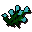
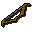
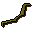
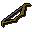
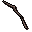
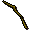
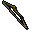
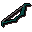

Bow string
| Config name | bow_string |
| Item id | 1777 |
| Value | 10 gp |
| Weight | 14g |
| Members | Yes |
| Tradeable | Yes |
| Stackable | No |
| Defined in | scripts/skill_crafting/configs/crafting.obj |
Bow string
I need a bow stave to attach this to.
How to make
| Skill | Level | XP | Ingredients | Tool | How | Where | Makes |
|---|---|---|---|---|---|---|---|
| Crafting | 10 | 15.0 |  Flax | use on object | spinning wheel | 1 |
Used to make
| Skill | Level | XP | Ingredients | Tool | How | Where | Makes |
|---|---|---|---|---|---|---|---|
| Fletching | 5 | 5.0 | use on item | ||||
| Fletching | 10 | 10.0 | use on item | ||||
| Fletching | 20 | 16.5 | Oak shortbow, | use on item |  Oak shortbow | ||
| Fletching | 25 | 25.0 | use on item | ||||
| Fletching | 35 | 33.2 |  Willow shortbow, | use on item |  Willow shortbow | ||
| Fletching | 40 | 41.5 | use on item | ||||
| Fletching | 50 | 50.0 | Maple shortbow, | use on item | Maple shortbow | ||
| Fletching | 55 | 58.2 |  Maple longbow, | use on item | Maple longbow | ||
| Fletching | 65 | 67.5 | Yew shortbow, | use on item | Yew shortbow | ||
| Fletching | 70 | 75.0 |  Yew longbow, | use on item |  Yew longbow | ||
| Fletching | 80 | 83.2 | use on item |  Magic shortbow | |||
| Fletching | 85 | 91.5 | use on item |
Quests
Referenced in scripts
scripts/_test/scripts/cheats/cheat_bank.rs2scripts/areas/area_mage_arena/scripts/mage_arena.rs2scripts/levelup/scripts/levelup_unlocks_crafting.rs2scripts/quests/quest_legends/scripts/strange_barrel.rs2scripts/quests/quest_waterfall/scripts/quest_waterfall.rs2scripts/skill_crafting/scripts/spinning/spinning.rs2scripts/skill_fletching/scripts/bows.rs2